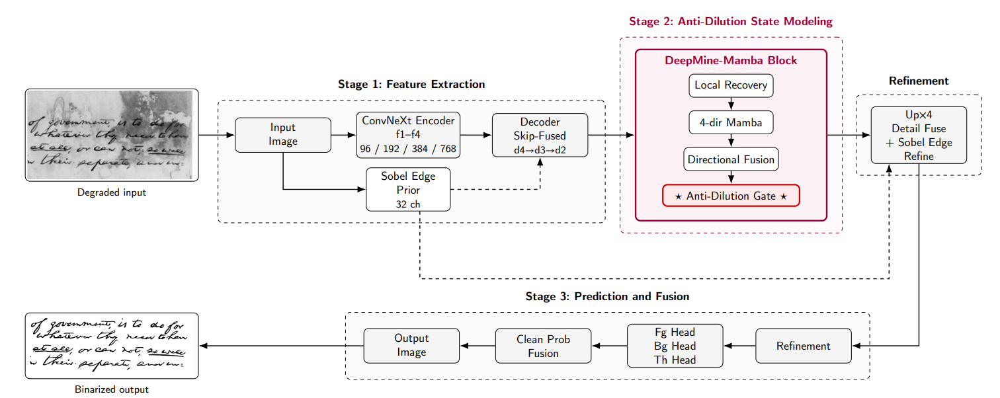

In short重點
A faint ink stroke early in a long scan is easy to lose by the end of it. We measure what state propagation removed — |x − m| — and use that signal to decide where to put it back. Best average FM and pseudo-FM across ten DIBCO years under a strict leave-one-year-out protocol.
一道出現在長距離掃描早期的淡墨筆畫，很容易在掃描結束前就消失。我們直接量測狀態傳播移除了什麼——|x − m|——並用這個訊號決定該在哪裡把它補回去。在嚴格的 leave-one-year-out 協定下，於十個 DIBCO 年份取得最佳的平均 FM 與 pseudo-FM。
The problem問題
Document binarization has to separate text from backgrounds carrying uneven illumination, bleed-through, stains, faded ink, and paper texture. Mamba's linear-time propagation is attractive here, because high-resolution manuscripts need both global degradation context and local stroke precision.
But document images are mostly background. When state-space propagation runs across a page, background-dominant responses overwhelm weak foreground cues, and faint ink traces, fragmented characters, and boundary-sensitive stroke details get diluted along the way. This failure mode is specific to the data — it is not a generic accuracy problem — and it had not been named before.
文件二值化必須把文字從帶有不均勻光照、透印、污漬、褪色墨跡與紙張紋理的背景中分離出來。 Mamba 的線性時間傳播在這裡很有吸引力，因為高解析度的手稿同時需要全域的劣化脈絡與局部的筆畫精度。
但文件影像的絕大部分是背景。當狀態空間傳播掃過整頁時，背景主導的響應會淹沒微弱的前景線索， 淡墨痕跡、斷裂的字元、對邊界敏感的筆畫細節，就在傳播途中被稀釋掉。 這個失效模式是資料特性造成的——不是一般性的準確度問題——而且先前沒有被命名過。
The idea作法
The key move is to measure the damage rather than guess at it. Given the original local feature x and the Mamba-propagated feature m, the term |x − m| describes exactly how much each location changed during propagation. The Anti-Dilution Gate feeds that difference into a lightweight detector to produce a dilution importance map, then modulates it by a stroke prior so compensation is confined to stroke regions instead of amplifying background noise. The output interpolates between the two: y = m + Î ⊙ (x − m). When the gate is closed, the model keeps Mamba's global context; when it opens, local stroke response comes back.
Around this sit a ConvNeXt-Tiny encoder, a Sobel edge prior fused late for detail-aware prediction, four-directional Mamba propagation with directional fusion, and three prediction heads that estimate foreground, background, and an adaptive threshold map. Training uses a pseudo F-measure loss computed on the skeletonised ground truth, which penalises missing stroke cores directly — the same objective the anti-dilution design is chasing.
關鍵作法是去量測損失，而不是猜測損失。給定原始的局部特徵 x 與經 Mamba 傳播後的特徵 m，|x − m| 這一項正好描述了每個位置在傳播過程中被改變了多少。 Anti-Dilution Gate 把這個差值送入輕量偵測器，產生稀釋重要性圖，再用筆畫先驗加以調製， 使補償只作用在筆畫區域，而不會連背景雜訊一起放大。輸出則在兩者之間插值： y = m + Î ⊙ (x − m)。閘門關閉時，模型保留 Mamba 的全域上下文； 閘門開啟時，局部筆畫響應就被找回來。
圍繞這個核心的是：ConvNeXt-Tiny 編碼器、在後段融合以支援細節感知預測的 Sobel 邊緣先驗、 帶方向性融合的四方向 Mamba 傳播，以及分別估計前景、背景與自適應閾值圖的三個預測頭。 訓練使用在骨架化標註上計算的 pseudo F-measure 損失，直接懲罰遺漏的筆畫核心—— 這正是 anti-dilution 設計所追求的目標。
Results實驗結果
| Method | FM ↑ | Fps ↑ | PSNR ↑ | DRD ↓ |
|---|---|---|---|---|
| Otsu | 77.27 | 79.14 | 15.22 | 17.24 |
| DeepOtsu | 88.59 | 90.84 | 19.33 | 3.76 |
| DocEnTr | 90.51 | 92.17 | 20.31 | 1.15 |
| DocBinFormer | 92.22 | 94.09 | 21.30 | 0.15 |
| TransDocUNet | 92.44 | 93.86 | 22.16 | 0.49 |
| DeepMine-Mamba | 92.56 | 94.61 | 20.88 | 2.34 |
| 方法 | FM ↑ | Fps ↑ | PSNR ↑ | DRD ↓ |
|---|---|---|---|---|
| Otsu | 77.27 | 79.14 | 15.22 | 17.24 |
| DeepOtsu | 88.59 | 90.84 | 19.33 | 3.76 |
| DocEnTr | 90.51 | 92.17 | 20.31 | 1.15 |
| DocBinFormer | 92.22 | 94.09 | 21.30 | 0.15 |
| TransDocUNet | 92.44 | 93.86 | 22.16 | 0.49 |
| DeepMine-Mamba | 92.56 | 94.61 | 20.88 | 2.34 |
| Method | FM ↑ | Fps ↑ | PSNR ↑ |
|---|---|---|---|
| DocBinFormer | 60.31 | 64.00 | 14.49 |
| D2BFormer | 67.63 | 66.69 | 15.05 |
| DocDiff | 73.38 | 75.12 | 15.14 |
| NAF-DPM | 74.61 | 76.25 | 15.39 |
| DeepMine-Mamba | 75.90 | 76.44 | 15.41 |
| 方法 | FM ↑ | Fps ↑ | PSNR ↑ |
|---|---|---|---|
| DocBinFormer | 60.31 | 64.00 | 14.49 |
| D2BFormer | 67.63 | 66.69 | 15.05 |
| DocDiff | 73.38 | 75.12 | 15.14 |
| NAF-DPM | 74.61 | 76.25 | 15.39 |
| DeepMine-Mamba | 75.90 | 76.44 | 15.41 |
Every result uses a leave-one-year-out protocol: for each target year, all of its images are held out of training entirely. This is stricter than the random splits many binarization papers use, and it is why the 2019 numbers are worth looking at — Set B is ancient papyrus with fibre structures that locally resemble strokes, and no papyrus appears anywhere else in the benchmark series.
每一項結果都採用 leave-one-year-out 協定：對每個目標年份，該年的所有影像完全排除在訓練之外。這比許多二值化論文採用的隨機切分更嚴格，也是 2019 這組數字值得一看的原因——Set B 是古代莎草紙，其纖維結構在局部看起來就像筆畫，而整個基準系列的其他年份都沒有莎草紙樣本。
What each part contributes各模組的貢獻
| Model | FM ↑ | Fps ↑ | DRD ↓ |
|---|---|---|---|
| Baseline U-Net | 74.84 | 75.55 | 8.13 |
| + ConvNeXt encoder | 86.17 | 87.96 | 7.24 |
| + Sobel edge prior | 87.05 | 88.53 | 6.51 |
| + 4-dir Mamba propagation | 90.54 | 93.35 | 4.79 |
| + Anti-Dilution Gate | 92.43 | 94.27 | 2.59 |
| + Refinement heads | 92.56 | 94.61 | 2.34 |
| 模型 | FM ↑ | Fps ↑ | DRD ↓ |
|---|---|---|---|
| Baseline U-Net | 74.84 | 75.55 | 8.13 |
| + ConvNeXt encoder | 86.17 | 87.96 | 7.24 |
| + Sobel edge prior | 87.05 | 88.53 | 6.51 |
| + 4-dir Mamba propagation | 90.54 | 93.35 | 4.79 |
| + Anti-Dilution Gate | 92.43 | 94.27 | 2.59 |
| + Refinement heads | 92.56 | 94.61 | 2.34 |
On the DRD trade-off關於 DRD 的取捨
Our DRD is not the lowest, and the gap is worth explaining rather than omitting. DRD sums per-pixel distortion over misclassified pixels, so a model that conservatively predicts background on out-of-distribution input caps its total error at the sparse set of true foreground pixels. On papyrus, predicting mostly background is a low-risk way to score a very low DRD while missing most of the text. DeepMine-Mamba does the opposite: it aggressively restores faint strokes, which introduces isolated foreground responses on fibrous backgrounds and is penalised for it. DRD should not be read in isolation when comparing stroke-recovery behaviour.
我們的 DRD 並非最低，而這個差距值得解釋，而不是略去。DRD 是把所有誤判像素的失真逐點加總，因此當模型面對分布外的輸入時，只要保守地全部預測成背景，總誤差就會被限制在稀疏的真實前景像素上。在莎草紙上，幾乎全部預測為背景是一個低風險的策略，可以換得極低的 DRD，卻同時漏掉大部分文字。DeepMine-Mamba 走的是相反的路：它積極還原淡薄的筆畫，因而在纖維狀背景上產生一些孤立的前景響應，並為此被扣分。在比較筆畫還原能力時，DRD 不應該被單獨解讀。